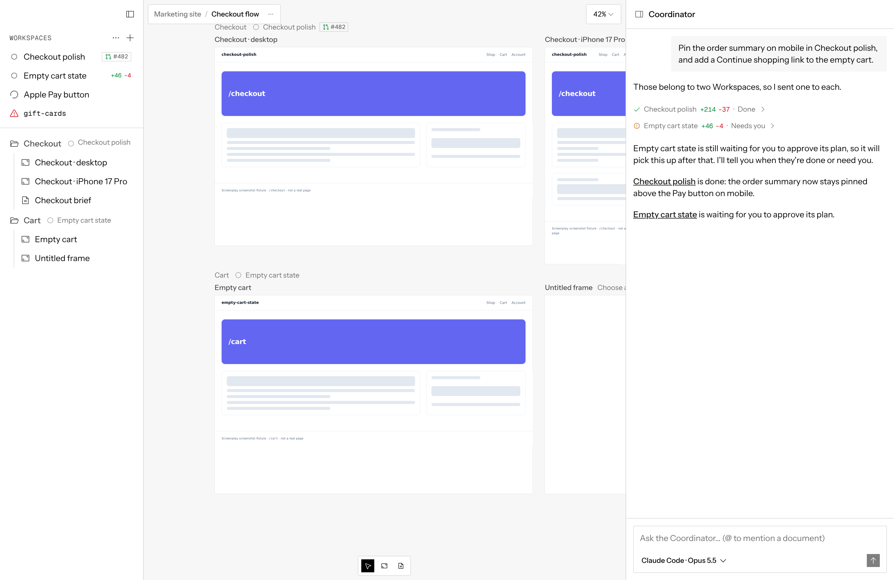
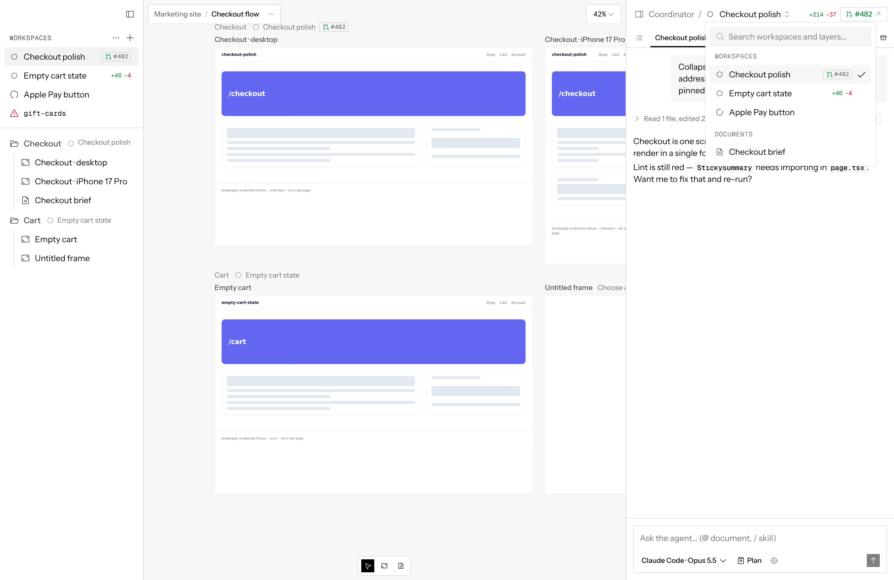

You asked whether the Workspaces list in the top-left sidebar feels out of place next to the Coordinator. Round 3 (first) returns to your top-right menu and fits it into the panel's navigation. Rounds 2 and 1 follow for reference.
Round 2 gave up too much canvas, so this keeps the layout you have: the Coordinator is the panel's home, and the sidebar keeps only the canvas's layers. The problem with round 1's A was that it added a second way to switch Workspaces. The Workspace header already had the Coordinator / Checkout polish ⌃⌄ switcher, and the new menu sat somewhere else. Both versions below fix that the same way: one Workspaces button, pinned to the far right of the panel header, in the same spot on every level. The breadcrumb only tells you where you are, and the button is how you move.
A popover under the button, like today's switcher: search, Coordinator as the first row, then the Workspaces list with its + and ··· (sort, group, Open existing git branch), state sections and Done. Picking a row opens it; Esc closes the menu. The chat underneath stays where it was.
The same button, but the list takes over the panel as its own level, Coordinator / Workspaces, like a page in a stack. It has room for everything the sidebar list does today, including row menus and drag. Picking a row goes to that Workspace; "Coordinator" goes home.
You said the thing to optimize is talking to the Coordinator. A1 keeps its chat on screen the whole time: the menu drops over it for a second and goes away. One pinned button replaces both the sidebar list and the header switcher, so there's a single way to move between chats. A2 is the fallback if the list's row menus and drag feel cramped in a popover.
Round 2 (agent chat as the main panel) and round 1, kept for reference.
You spend most of your time in a Workspace's chat, so it should be the main panel, always there and wider than today. The Coordinator is quiet by design: it speaks when a Workspace finishes, is blocked, or needs you. It doesn't need a full panel. Each option below makes the agent chat the panel and the Coordinator something narrow. The sidebar keeps only the canvas's layers.
Today the Coordinator is the panel's home, and opening a Workspace replaces it (Coordinator / Checkout polish breadcrumb). All three options drop that home: the panel opens on the last Workspace you used, or on + New workspace when there are none.
A slim column on the right edge. On top: the Workspaces list, with + and ··· for sort, group and Open existing git branch. Below: the Coordinator's messages, short, with its composer. Clicking a row opens that Workspace in the wide chat beside it. A pink dot marks a Workspace that needs you.
Checkout polish is done: the summary stays pinned on mobile.
Empty cart state is waiting for you to approve its plan ›
The panel is always the agent chat. Its header keeps today's Workspace switcher on the left, now with + and ···. A Coordinator button at the top right, with a dot when it has news, opens it as a narrow popover over the chat. ⤢ pins it open as a column (R1's layout without the list).
Narrow in height instead of width: a strip at the top of the agent chat shows the Coordinator's latest message. Click it to pull the Coordinator chat down over the panel; click again to put it away.
It does what you describe, a wide agent chat and a narrow Coordinator, and it also answers your first question. The Workspaces list stops floating at the top left and lives with the Coordinator, which is the thing that manages Workspaces. It's the only option where you see both at a glance: which agents are working and what the Coordinator has to say. If giving up canvas width is too much, R2 is the lighter version and can grow into R1 by pinning.
The first comparison, kept for reference.
The same Workspaces show up in three places. The sidebar lists them (top left). The Coordinator names them in task rows and replies. A Workspace's chat header has a switcher (Coordinator / Checkout polish ⌃⌄) that lists them again. The Coordinator's own header is only a title, and its top right is empty.


Captured from main (df7b548) with the screenshot harness: chat-coordinator-wake and chat-header-workspace-picker.
The sidebar keeps only the canvas's layers. The Coordinator header gets a Workspaces button on the right, showing the count and the 9-dot when an agent is working. It opens a popover holding today's list as is: rows with state icon, title and PR badge, the + and … actions, sort and group, and the Done section.
Same move out of the sidebar, but the list opens from the Coordinator's title, using the switcher every Workspace header already has. The Coordinator becomes the first row in it. Coordinator ⌃⌄ on home and Coordinator / Checkout polish ⌃⌄ in a Workspace open the same popover, with the + and … actions moved in from the sidebar.
No change. Most agent apps (Codex, Cursor's agents, Conductor, Claude Code desktop) list their sessions in a left sidebar with a status per row, and the chat for the selected one on the other side. Today's screen already has that shape, with the Coordinator as the panel's home.
| A · top-right menu | B · title switcher | C · sidebar | |
|---|---|---|---|
| Where the list opens | Button, Coordinator header right | Title, every chat header left | Always open, sidebar top left |
| Same control inside a Workspace | No (switcher on the left) | Yes | Yes (sidebar) |
| Working state at a glance | Button's 9-dot + group pills | Group pills + task rows | Every row |
| Sidebar holds | Layers only | Layers only | Workspaces + layers |
| Size of change | New button + popover | Extend existing switcher | None |
I agree with your instinct: Workspaces belong with the Coordinator, and the sidebar reads better as just the canvas's layers. I'd open them from the Coordinator's title rather than a new top-right button. Every Workspace header already has that switcher in that spot, so one control covers both, and A would leave you with two.
Either way, the Workspaces list moves as it is: + to create, … for sort, group and Open existing git branch, row menus, Done section. Drag to reorder would only happen inside the popover.